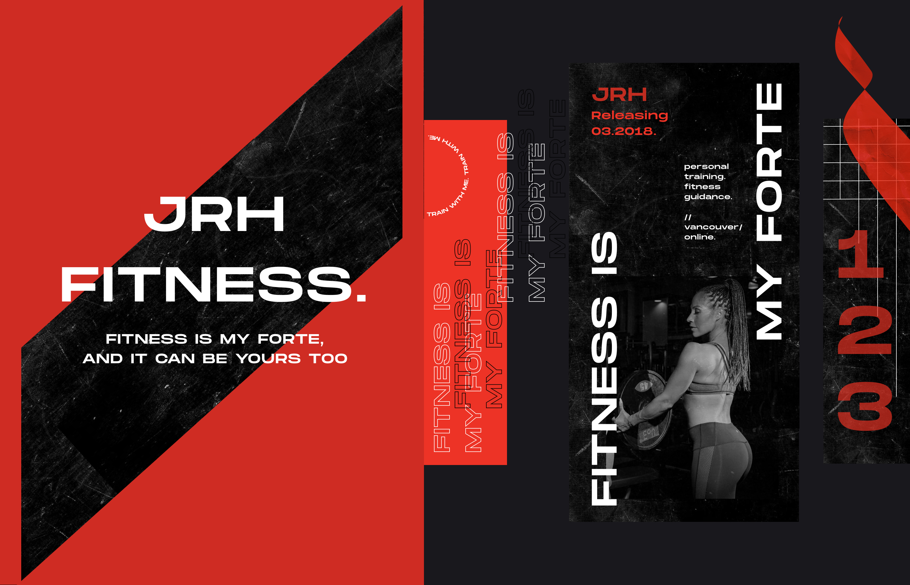
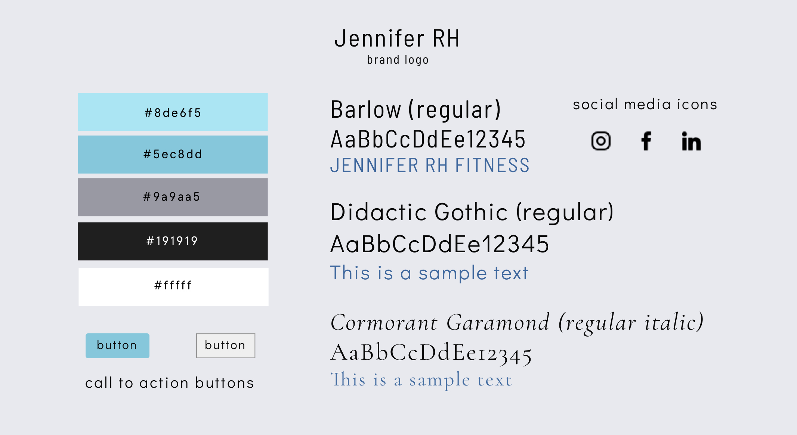
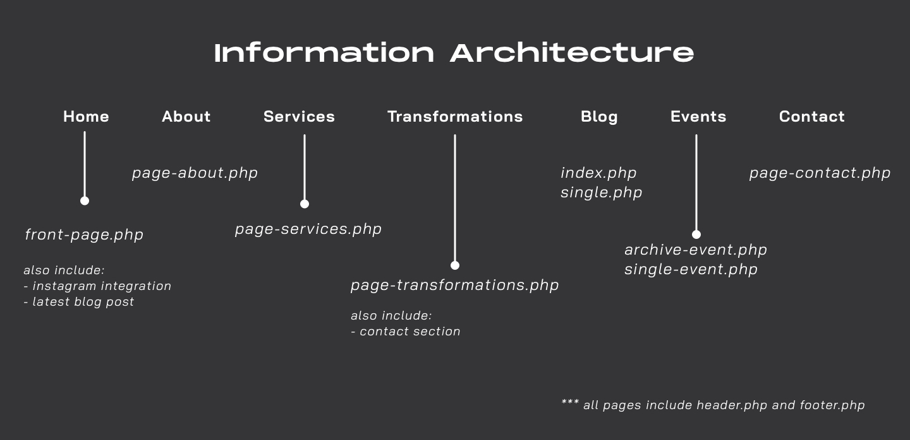
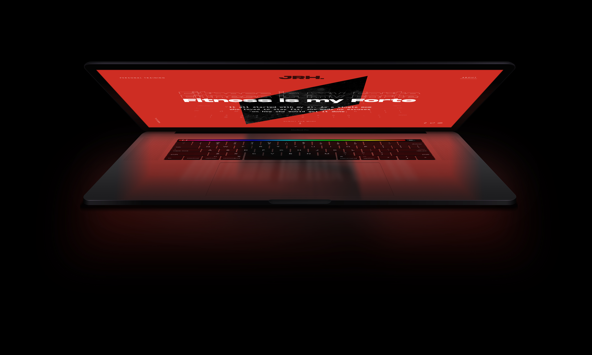
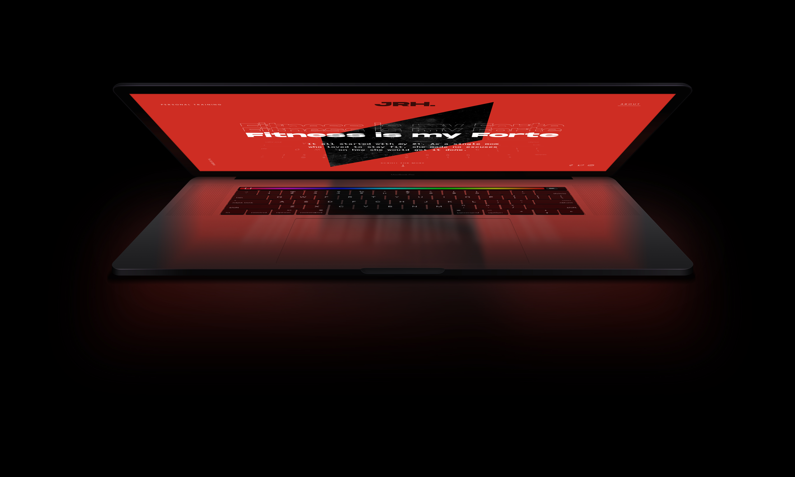
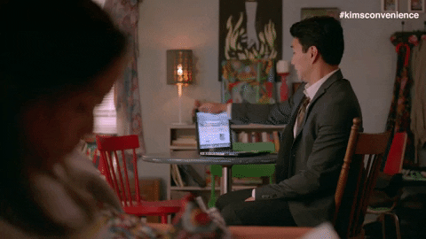

Front-end Web Development + Design
[I'm not an expert web developer but] I do have some experience in creating front-end web experiences. Links to the finished sites right below, and continue reading to hear about the process in detail.
The finished goods. ⇣
1) A client project for a local fitness trainer
2) A personal project for an award-winning floral designer
Web Design
HTML/CSS, WordPress + PHP, JavaScript
Product Research
Introduction.
Fitness is My Forte is a website created for Jennifer RH, a local personal fitness trainer with no previous website or brand identity. This was a client capstone project for a design and development program I took.
The team.
Role
Web design/development, Product research
Client
Jennifer RH
Year
Spring 2018
The challenge.
Over the last few years, Jennifer had been thinking about opening her own fitness training business after several requests from friends and family, and has decided that this was the year to begin it.
My team and I had no experience with creating a fitness website, nor any idea on how to create a brand.
But basically, our goal was to create a dynamic informational site from scratch.
Business goals:
1. A dynamic, easy to maintain site where information about her services could be easily discovered, updated, and understood.
2. Allow clients to contact Jennifer directly (by program guidelines, we were not liable to set up an e-commerce website)
To further help us understand what other fitness trainers offered, we looked at several sites (some examples here, here and here) for competitive analysis and to gain insight into the fitness industry.
The discovery.
To inform our design and development decisions, we conducted an initial survey to inquire users on what they thought about personal training and what they would like to see on a site offering fitness services. We gained insights from 21 random individuals between the ages of 20-30, and some of them were being parents.
This was the target age range that Jennifer was aiming for, as she wanted to show young adults and parents that it is possible to maintain both a healthy lifestyle and or/whilst raising a family.
Our results informed us of several things:

Other common comments included:
- personal training was too expensive!
- want to see the trainer as friendly and approachable
- health was not a high priority in people's current lifestyles
- would only consider a personal trainer if people cannot get the information or specific routine themselves
The primary goal for Jennifer's site was to display her services, and offer a way of contact for clients to reach her. Knowing this, we began with a content-first approach in creating her product.
The creation.
To ensure brand consistency, the team decided to create a moodboard and style guide to ensure a cohesive brand impact for the client.

You might have noticed that this moodboard does not match the branding material shown in this case study, but is reflective of the actual website
Hmm... our original style guide...
Looking back, I think we could have spent more time on researching cohesive colour palettes and design styles so that her brand was more modern and unique. In addition, I think we could have been more assertive in suggesting recommendations, as we ended with colours that did not necessary work with the black and grey colour palette.
As with a content-first approach, we also created an information architecture to guide our WordPress files and directories.
After the IA was finalized, we ran through several iterations of the website layout. In hindsight, we should have started with a mobile-first design because we ended up with a lot of code changes trying to re-adjust for the mobile platform...
The redesigns 2.0
If we had time to rebrand and refine the brand, I would have chosen red as our highlighted color to work with the black and grey colour palette.
For fun, I made it a personal challenge to do some rebrand work within 3 days for Fitness is my Forte.
 

Much better!
The Development.
Once the mockup designs were approved with Jennifer, we went ahead with development. We created a custom WordPress site using a starter theme, creating our own taxonomies and hierarchies. Having a Wordpress site would allow Jennifer the flexibility to change and manager her content as her business grew and changed.

Here's a screenshot if you want to see some code
And Deliverables.
After the site was developed on our local sites, it was time to hand it off to the client on her own hosting site.
Well, transferring the content from server to server was kind of really stressful, and took much longer than we had initially thought... but that sums up our one-month capstone project!
Reflections & Going Forward
In the end, there were several things I still would have liked to have changed if allowed the time and if our design/development skills were stronger.
While the starter theme set up a solid base for us to create the site, we faced other issues that we did not expect. The biggest challenge was actually working cohesively and productively as a team. Of course, this led to some poor communication, which resulted in poor code and rushed timelines.
Another problem was getting past the learning curve for unfamiliar software. For this project, we styled the site using SASS and utilized GULP to automate our development workflow. And then we ran into merge conflicts and that was another ordeal LOL.
But we rebounded from this by adapting the scrum framework, which really helped us get through our mess.
All in all, I am immensely proud of my team and I for creating our first ever 'proper' website! (quality and aesthetics is debatable okay) It gave us a chance to see what a front-end developer does on a daily basis as well as what freelance work might be like.
Woohoo!
Moving forward, it would have been great if we could have upgraded Jennifer's branding and website, as well as make our code even more effective and simplified. In addition, it would have been really valuable to see our SEO metrics from Google Analytics and apply other forms of digital marketing to further push her site!
Thanks for reading! There's another personal project right below ☺

Web Design
Front-end Development
Product Research
Introduction.
Fitness is My Forte is a website created for Jennifer RH, a local personal fitness trainer with no previous website or brand identity. This was a client capstone project for a design and development program I took.
The team.
The challenge.
Over the last few years, Jennifer had been thinking about opening her own fitness training business after several requests from friends and family, and has decided that this was the year to begin it.
My team and I had no experience with creating a fitness website, nor any idea on how to create a brand.
To further help us understand what other fitness trainers offered, we looked at several sites (some examples here, here and here) for competitive analysis and to gain insight into the fitness industry.
The exploration.
The primary goal for Jennifer's site was to display her services, and offer a way of contact for clients to reach her. Knowing this, we began with a content-first approach in creating her product.
Business goals:
1. A dynamic, easy to maintain site where information about her services could be easily discovered, updated, and understood.
2. Allow clients to contact Jennifer directly (by program guidelines, we were not liable to set up an e-commerce website)
The discovery.
To inform our design and development decisions, we conducted an initial survey to inquire users on what they thought about personal training and what they would like to see on a site offering fitness services. We gained insights from 21 random individuals between the ages of 20-30, with some being parents, which gave us a good start to creating the website.
Our results informed us of several things:
Ok and from my research i found this stuff
Ok and from my research i found this stuff
Ok and from my research i found this stuff
Reframing the problemooo.
Ok and from my research i found this stuff
Ok and from my research i found this stuff
Ok and from my research i found this stuff
Ok and from my research i found this stuff
The redesigns.
Ok and from my research i found this stuff
Ok and from my research i found this stuff
Ok and from my research i found this stuff
Ok and from my research i found this stuff
How we got from there to here.
Ok and from my research i found this stuff
Ok and from my research i found this stuff
Ok and from my research i found this stuff
Ok and from my research i found this stuff
The impact.
Ok and from my research i found this stuff RESULTS NOW
Ok and from my research i found this stuff RESULTS NOW
Ok and from my research i found this stuff RESULTS NOW
Ok and from my research i found this stuff RESULTS NOW